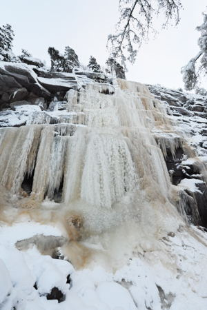

Lat: 58.491608 Long: 11.490669
Ett ganska brett isfall beroende på tillväxt, grad 4-5 och ca 50m högt som bjuder på fin isklättring. Isfallet ligger nära Bohusläns klätterklubbs klubbstuga, syns från stugan och vägen. Det går bra att parkera vid stugan och gå över till isfallet
Kategori:Bohuslän
Kategori:Is
<div style="width: 355; float: right; margin-left: 10px; padding: 3px; border: solid 1px #cccccc;">
</div> Söderifrån, tag av E6 vid Dinglemotet, kör väg 174 västerut. Efter ca 6,5 km sväng vänster mot Lysekil, in i Bärfendalen. Efter 1,1 km är du framme vid uppfarten till klubbstugan, markerad med en liten skylt på höger sida. Kör uppför backen och parkera. Obs! Det är inte tillåtet att parkera vid soptunnorna nere vid vägen, vändplanen där är till för hästägarna och deras transporter. Blockera inte heller vägen (efter backen) till grannhuset.
Alternativt fortsätt förbi infarten till stugan och tag sedan tre vägen ner till vänster (se karta). Parkera i slutet av vägen och kolla så att det inte stör boende eller liknande. Gå sedan på stigen som leder mot Dinglehållet. Efter ca 300 m kommer ni fram till fallet.
Till fallet från klubbstugan Isfallet syns från stugan och ligger på andra sidan ängen. Gå ner på vägen från stugan, ta vänster tag sedan vänster igen vid första vägen. Fortsätt upp förbi gårdarna längst in och visa hänsyn. Förbi gårdarna går en stig som man följer upp till fallet.
Copyright (C) Permission is granted to copy, distribute and/or modify this document under the terms of the GNU Free Documentation License, Version 1.3